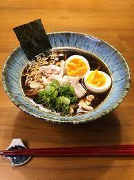

Home
Ramen

Description
Ramen is a noodle dish, and happens to be
one of the most well-known and beloved food staples in Japan!
Ingredients
- Rice
- Marinated beef or chicken
- Carrots
- Spinach
- Kimchi
- Cucumbers
- Shiitake Mushrooms
- Other vegetables you like!
Steps
- Marinate the meat for about 30 mins
- Prepare and cook the spinach
- Rinse and peel the Carrots
- Rinse and clean the shiitake mushrooms then thinly slice them
- Make sunny sideup fried eggs (personally recommend the runny kind!)
- Put the rice into the bowl and add meat, assorted vegetables then the egg on top of the rice!